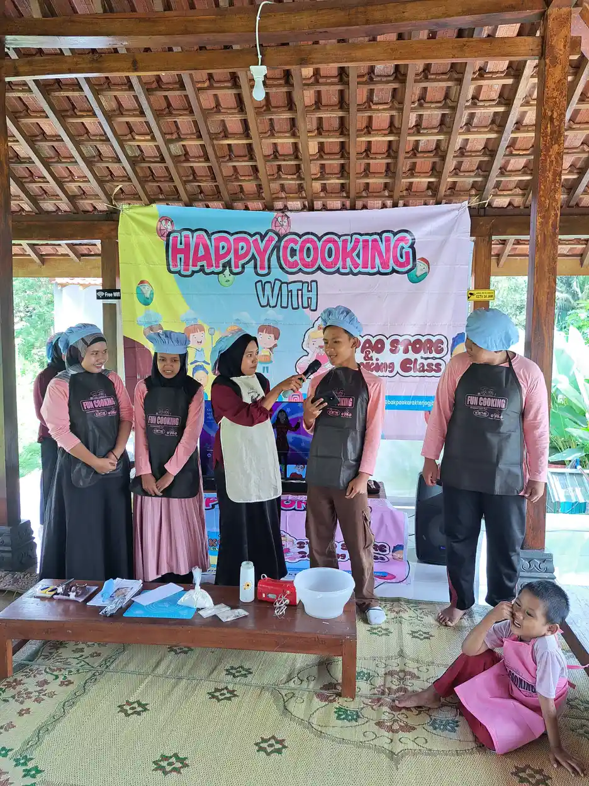
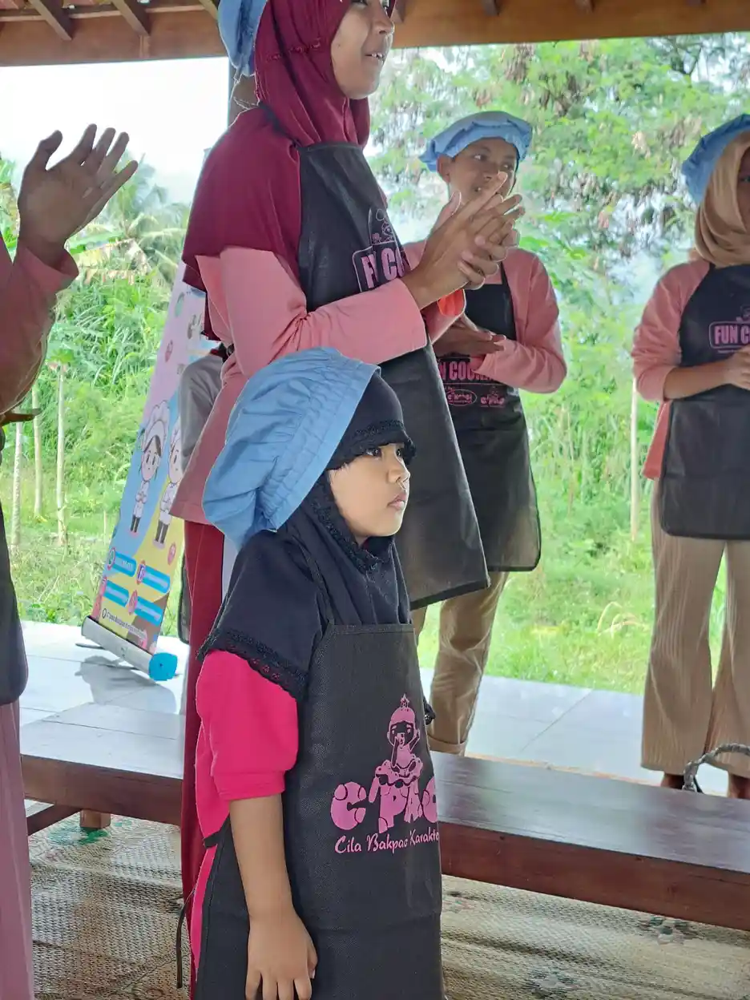
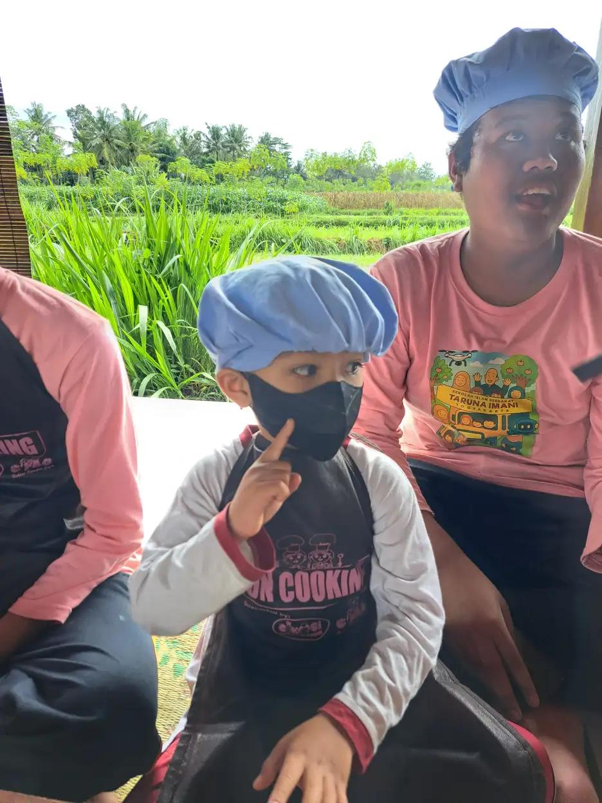

Inklusi sosial adalah sebuah konsep dan prinsip yang memastikan setiap individu dalam masyarakat, tanpa memandang latar belakang, kondisi fisik, status ekonomi, gender, ras, atau identitas sosial lainnya, memiliki kesempatan yang setara untuk berpartisipasi secara penuh dalam kehidupan bermasyarakat. Dalam konteks Indonesia yang kaya akan keberagaman, pemahaman tentang inklusi sosial menjadi sangat penting untuk membangun masyarakat yang adil, harmonis, dan sejahtera.
Di Yayasan Ukhuwah Kaffah Amanatullah (YUKA), kami percaya bahwa setiap manusia memiliki hak yang sama untuk diterima, dihargai, dan diberdayakan. Melalui program-program pendidikan dan pemberdayaan di Yogyakarta, kami menyaksikan langsung bagaimana penerapan prinsip inklusi sosial dapat mengubah kehidupan banyak orang, terutama anak-anak berkebutuhan khusus dan keluarga yang kurang beruntung secara ekonomi.
Artikel ini akan membahas secara mendalam tentang pengertian inklusi sosial, prinsip-prinsip yang mendasarinya, perbedaannya dengan eksklusi sosial, serta bagaimana konsep ini diterapkan di Indonesia. Kami juga akan membagikan pengalaman nyata YUKA dalam mewujudkan masyarakat inklusif di tingkat komunitas. Untuk memahami lebih lanjut tentang anak-anak yang menjadi salah satu kelompok penerima manfaat inklusi sosial, silakan baca artikel kami tentang Anak Berkebutuhan Khusus (ABK).
Ringkasan cepat: teori inklusi sosial
Teori inklusi sosial menjelaskan bagaimana masyarakat, sekolah, lembaga sosial, dan negara membuka akses yang adil agar kelompok rentan tetap bisa berpartisipasi. Dalam praktik YUKA, teori ini bukan hanya soal menerima anak berkebutuhan khusus di satu ruang, tetapi memastikan dukungan belajar, lingkungan, dan relasi sosialnya ikut disiapkan.
Daftar Isi
Apa Itu Inklusi Sosial?
Inklusi sosial adalah proses di mana setiap individu dan kelompok dalam masyarakat diberikan kesempatan yang sama untuk berpartisipasi secara aktif dalam kehidupan sosial, ekonomi, budaya, dan politik. Konsep ini menekankan bahwa tidak ada seorang pun yang boleh ditinggalkan atau dipinggirkan dari proses pembangunan dan kehidupan bermasyarakat.
Secara etimologis, kata "inklusi" berasal dari bahasa Latin "inclusio" yang berarti "memasukkan" atau "mengikutsertakan." Dalam konteks sosial, inklusi merujuk pada upaya sadar dan terstruktur untuk memastikan bahwa seluruh anggota masyarakat dapat mengakses sumber daya, layanan, dan kesempatan yang tersedia secara adil dan merata.
Definisi Inklusi Sosial Menurut Para Ahli
Berbagai ahli dan lembaga internasional telah memberikan definisi tentang pengertian inklusi sosial yang saling melengkapi:
- Bank Dunia (World Bank) mendefinisikan inklusi sosial sebagai proses meningkatkan kemampuan, kesempatan, dan martabat orang-orang yang kurang beruntung berdasarkan identitas mereka untuk berpartisipasi dalam masyarakat.
- Perserikatan Bangsa-Bangsa (PBB) menyatakan bahwa inklusi sosial adalah proses perbaikan syarat-syarat bagi individu dan kelompok untuk mengambil bagian dalam masyarakat, serta proses perbaikan kemampuan, kesempatan, dan martabat mereka.
- European Commission mengartikan inklusi sosial sebagai proses yang memastikan mereka yang berisiko mengalami kemiskinan dan eksklusi sosial mendapat kesempatan dan sumber daya yang diperlukan untuk berpartisipasi penuh dalam kehidupan ekonomi, sosial, dan budaya.
- Amartya Sen, penerima Nobel Ekonomi, menekankan bahwa inklusi sosial berkaitan erat dengan konsep kapabilitas, yaitu kebebasan nyata yang dimiliki seseorang untuk mencapai kehidupan yang ia nilai berharga.
Dimensi-Dimensi Inklusi Sosial
Inklusi sosial bukan sekadar konsep tunggal, melainkan mencakup beberapa dimensi yang saling berkaitan:
- Dimensi ekonomi: akses terhadap pekerjaan, pendapatan layak, dan sumber daya ekonomi.
- Dimensi sosial: keterlibatan dalam jaringan sosial, komunitas, dan hubungan interpersonal yang bermakna.
- Dimensi politik: partisipasi dalam pengambilan keputusan, hak suara, dan keterwakilan dalam lembaga publik.
- Dimensi budaya: pengakuan dan penghargaan terhadap keberagaman budaya, bahasa, dan tradisi.
- Dimensi spasial: akses terhadap infrastruktur, layanan publik, dan ruang publik yang ramah bagi semua.
"Inklusi sosial bukan tentang menyamakan semua orang, melainkan tentang memastikan bahwa perbedaan tidak menjadi penghalang bagi siapa pun untuk hidup bermartabat dan berkontribusi bagi masyarakat."
Dalam kehidupan sehari-hari, inklusi sosial tercermin dalam hal-hal sederhana seperti tersedianya fasilitas ramah disabilitas di gedung publik, kurikulum pendidikan yang mengakomodasi keberagaman, kebijakan ketenagakerjaan yang non-diskriminatif, dan budaya masyarakat yang menghargai perbedaan. Untuk pemahaman lebih lanjut tentang bagaimana inklusi diterapkan bagi penyandang disabilitas, silakan kunjungi artikel terkait di situs kami.
Prinsip-Prinsip Inklusi Sosial
Untuk membangun masyarakat inklusif yang sesungguhnya, terdapat sejumlah prinsip inklusi yang harus dipahami dan diterapkan secara konsisten. Prinsip-prinsip ini menjadi fondasi bagi setiap upaya mewujudkan kesetaraan dan keadilan sosial.
1. Prinsip Kesetaraan (Equality)
Kesetaraan sosial merupakan prinsip paling fundamental dalam inklusi sosial. Prinsip ini menegaskan bahwa setiap manusia memiliki hak yang sama, terlepas dari perbedaan latar belakang. Kesetaraan bukan berarti memperlakukan semua orang dengan cara yang persis sama, melainkan memastikan bahwa setiap orang mendapatkan perlakuan yang sesuai dengan kebutuhannya untuk mencapai hasil yang adil.
Dalam praktiknya, prinsip kesetaraan tercermin dalam pemberian akses pendidikan yang sama bagi anak-anak dari berbagai kondisi sosial ekonomi, termasuk difabel dan kelompok rentan lainnya. Kesetaraan juga berarti menghilangkan hambatan struktural yang menghalangi kelompok tertentu untuk berkembang.
2. Prinsip Partisipasi (Participation)
Inklusi sosial menuntut partisipasi aktif dari seluruh anggota masyarakat. Setiap individu berhak dan harus didorong untuk terlibat dalam proses pengambilan keputusan yang memengaruhi kehidupan mereka. Partisipasi ini tidak hanya dalam ranah politik, tetapi juga dalam kehidupan sosial, ekonomi, dan budaya sehari-hari.
Partisipasi yang bermakna membutuhkan lingkungan yang mendukung, di mana setiap suara didengar dan dihargai. Ini termasuk menyediakan sarana komunikasi yang aksesibel, seperti penggunaan bahasa isyarat bagi komunitas tuli, atau penyediaan dokumen dalam format yang mudah dibaca bagi penyandang disabilitas intelektual.
3. Prinsip Non-Diskriminasi
Prinsip ini menegaskan bahwa tidak boleh ada pembedaan, pengecualian, pembatasan, atau perlakuan tidak adil yang didasarkan pada ras, warna kulit, jenis kelamin, bahasa, agama, pandangan politik, asal kebangsaan atau sosial, status ekonomi, disabilitas, atau status lainnya. Diskriminasi, baik yang bersifat langsung maupun tidak langsung, harus dihapuskan dari seluruh aspek kehidupan bermasyarakat.
4. Prinsip Aksesibilitas (Accessibility)
Masyarakat inklusif harus memastikan bahwa semua fasilitas, layanan, informasi, dan lingkungan dapat diakses oleh setiap orang. Aksesibilitas mencakup desain universal dalam pembangunan fisik, teknologi informasi yang ramah bagi semua pengguna, serta layanan publik yang dapat dijangkau oleh masyarakat di berbagai wilayah, termasuk daerah terpencil.
5. Prinsip Penghargaan terhadap Keberagaman
Indonesia adalah negara dengan keberagaman yang luar biasa, mulai dari suku, agama, bahasa, hingga budaya. Prinsip ini menekankan bahwa keberagaman bukanlah ancaman, melainkan kekayaan dan kekuatan. Masyarakat inklusif merayakan perbedaan sebagai sumber pembelajaran dan pertumbuhan bersama.
6. Prinsip Pemberdayaan (Empowerment)
Inklusi sosial bukan hanya tentang memberikan bantuan, tetapi lebih tentang memberdayakan individu dan komunitas agar mampu mandiri dan berkontribusi secara aktif. Pemberdayaan berarti memberikan keterampilan, pengetahuan, dan kepercayaan diri yang dibutuhkan untuk mengatasi hambatan dan meraih potensi penuh. Ini sejalan dengan apa yang dilakukan oleh berbagai yayasan sosial untuk anak berkebutuhan khusus di Indonesia.

Inklusi Sosial vs Eksklusi Sosial
Untuk memahami inklusi sosial secara utuh, penting juga untuk mengenal konsep lawannya, yaitu eksklusi sosial. Keduanya merupakan dua sisi mata uang yang saling berkaitan erat dalam dinamika kehidupan bermasyarakat.
Pengertian Eksklusi Sosial
Eksklusi sosial adalah kondisi di mana individu atau kelompok tertentu terpinggirkan dari partisipasi penuh dalam masyarakat. Mereka tidak memiliki akses yang sama terhadap sumber daya, layanan, dan kesempatan yang seharusnya tersedia bagi semua orang. Eksklusi sosial bisa terjadi secara sengaja melalui kebijakan diskriminatif, maupun secara tidak sengaja melalui struktur sosial yang tidak adil.
Perbandingan Inklusi dan Eksklusi Sosial
Berikut adalah beberapa perbedaan mendasar antara inklusi sosial dan eksklusi sosial:
- Akses terhadap layanan: Inklusi sosial memastikan semua orang dapat mengakses layanan pendidikan, kesehatan, dan sosial. Sebaliknya, eksklusi sosial menciptakan hambatan yang menghalangi kelompok tertentu dari layanan tersebut.
- Partisipasi masyarakat: Dalam masyarakat inklusif, setiap individu didorong untuk berpartisipasi aktif. Dalam masyarakat eksklusif, kelompok tertentu diam-diam atau terang-terangan disingkirkan dari proses partisipasi.
- Pengakuan identitas: Inklusi sosial menghargai dan mengakui keberagaman identitas. Eksklusi sosial cenderung menyeragamkan dan meminggirkan mereka yang dianggap "berbeda."
- Distribusi sumber daya: Inklusi sosial berupaya mendistribusikan sumber daya secara adil dan merata. Eksklusi sosial mengakibatkan konsentrasi sumber daya pada kelompok tertentu saja.
- Dampak psikologis: Inklusi sosial membangun rasa memiliki, harga diri, dan kesejahteraan psikologis. Eksklusi sosial menyebabkan isolasi, rendahnya harga diri, dan gangguan kesehatan mental.
Kelompok Rentan terhadap Eksklusi Sosial
Beberapa kelompok yang paling rentan mengalami eksklusi sosial antara lain:
- Penyandang disabilitas, baik fisik, sensorik, intelektual, maupun mental
- Masyarakat miskin dan yang hidup di daerah terpencil
- Perempuan dan anak-anak, terutama mereka yang mengalami kekerasan
- Kelompok lansia yang tidak memiliki jaringan pendukung
- Masyarakat adat dan kelompok minoritas
- Anak-anak berkebutuhan khusus yang tidak mendapatkan layanan pendidikan yang memadai
- Pengungsi dan pekerja migran
Tahukah Anda?
Estimasi global menyebutkan sekitar 1,3 miliar orang di dunia atau sekitar 16% dari populasi global hidup dengan beberapa bentuk disabilitas. Di Indonesia, data survei nasional 2022 mencatat sekitar 22,97 juta jiwa atau 8,5% penduduk merupakan penyandang disabilitas. Banyak dari mereka masih menghadapi berbagai bentuk eksklusi sosial dalam kehidupan sehari-hari.
Penerapan Inklusi Sosial di Indonesia
Indonesia telah menunjukkan komitmen yang semakin kuat dalam mewujudkan inklusi sosial melalui berbagai kebijakan, regulasi, dan program pembangunan. Meskipun masih banyak tantangan yang harus dihadapi, kemajuan yang telah dicapai patut diapresiasi dan menjadi pijakan untuk langkah selanjutnya.
Kerangka Hukum dan Kebijakan
Indonesia memiliki sejumlah regulasi yang mendukung penerapan inklusi sosial:
- UUD 1945 Pasal 28: Menjamin hak asasi manusia, termasuk hak atas pendidikan, pekerjaan, dan kehidupan yang layak bagi setiap warga negara.
- UU No. 8 Tahun 2016 tentang Penyandang Disabilitas: Mengatur hak-hak penyandang disabilitas secara komprehensif, mulai dari pendidikan, pekerjaan, aksesibilitas, hingga partisipasi politik.
- UU No. 11 Tahun 2009 tentang Kesejahteraan Sosial: Menetapkan kerangka penyelenggaraan kesejahteraan sosial yang inklusif bagi seluruh lapisan masyarakat.
- Permendiknas No. 70 Tahun 2009: Mengatur penyelenggaraan pendidikan inklusi yang memberikan kesempatan belajar bagi peserta didik berkebutuhan khusus di sekolah reguler.
- RPJMN 2020-2024: Memasukkan inklusi sosial sebagai salah satu agenda prioritas pembangunan nasional, dengan target mengurangi ketimpangan dan meningkatkan akses layanan dasar.
Program Pemerintah untuk Inklusi Sosial
Pemerintah Indonesia telah meluncurkan berbagai program yang bertujuan mendorong inklusi sosial:
- Program Keluarga Harapan (PKH): Bantuan sosial bersyarat yang ditujukan kepada keluarga miskin dan rentan untuk meningkatkan akses terhadap pendidikan dan kesehatan.
- Jaminan Kesehatan Nasional (JKN-BPJS): Program jaminan kesehatan universal yang memastikan setiap warga negara dapat mengakses layanan kesehatan tanpa hambatan finansial.
- Program Indonesia Pintar (PIP): Bantuan pendidikan bagi anak-anak dari keluarga kurang mampu untuk memastikan mereka tetap bersekolah.
- Bantuan Langsung Tunai (BLT) dan Program Sembako: Jaring pengaman sosial untuk masyarakat yang paling rentan secara ekonomi.
- Dana Desa: Alokasi anggaran untuk pembangunan desa yang mencakup penyediaan fasilitas publik yang inklusif dan aksesibel.

Peran Masyarakat Sipil dan Organisasi Non-Pemerintah
Selain pemerintah, masyarakat sipil dan organisasi non-pemerintah memainkan peran yang sangat penting dalam mewujudkan inklusi sosial di Indonesia. Organisasi seperti YUKA, yang bergerak di bidang pendidikan inklusi dan pemberdayaan anak berkebutuhan khusus, menjadi ujung tombak gerakan inklusi di tingkat komunitas.
Organisasi masyarakat sipil berperan dalam beberapa hal krusial: advokasi kebijakan inklusif kepada pemerintah, pendampingan langsung bagi kelompok rentan, peningkatan kesadaran masyarakat tentang pentingnya inklusi, pengembangan model-model inovatif penerapan inklusi, serta pemantauan dan evaluasi implementasi kebijakan inklusi. Peran aktif orang tua dalam pendidikan inklusi juga menjadi kunci keberhasilan gerakan ini.
Inklusi Sosial dalam Pendidikan
Pendidikan merupakan salah satu arena paling penting dalam penerapan inklusi sosial. Pendidikan inklusif bukan hanya tentang menempatkan anak berkebutuhan khusus di sekolah reguler, tetapi tentang menciptakan sistem pendidikan yang mampu mengakomodasi keberagaman dan memastikan setiap anak mendapatkan pengalaman belajar yang bermakna.
Prinsip Pendidikan Inklusif
Pendidikan inklusif didasarkan pada prinsip bahwa setiap anak, tanpa terkecuali, memiliki hak untuk belajar di lingkungan yang menerima dan mendukung mereka. Beberapa prinsip utama pendidikan inklusif meliputi:
- Penerimaan tanpa syarat: Setiap anak diterima di sekolah tanpa memandang kondisi fisik, intelektual, sosial, emosional, atau kondisi lainnya.
- Kurikulum yang fleksibel: Kurikulum disesuaikan dengan kebutuhan dan kemampuan masing-masing peserta didik, bukan memaksa anak untuk menyesuaikan diri dengan kurikulum yang kaku.
- Pembelajaran yang berpusat pada anak: Proses belajar-mengajar dirancang untuk mengakomodasi gaya belajar dan kecepatan belajar yang berbeda-beda.
- Kolaborasi dan kerja sama: Guru, orang tua, terapis, dan komunitas bekerja sama untuk mendukung keberhasilan belajar setiap anak.
- Lingkungan belajar yang ramah: Sekolah menyediakan sarana dan prasarana yang aksesibel serta menciptakan budaya yang menghargai keberagaman.
Manfaat Pendidikan Inklusif bagi Semua Anak
Pendidikan inklusif tidak hanya bermanfaat bagi anak berkebutuhan khusus, tetapi juga memberikan dampak positif bagi seluruh peserta didik:
- Bagi anak berkebutuhan khusus: Mendapatkan kesempatan belajar di lingkungan yang merangsang, mengembangkan keterampilan sosial, meningkatkan kepercayaan diri, dan mempersiapkan mereka untuk hidup mandiri di masyarakat.
- Bagi anak reguler: Belajar tentang empati, toleransi, dan penghargaan terhadap keberagaman. Mereka juga mengembangkan keterampilan kepemimpinan dan kemampuan berinteraksi dengan orang-orang dari berbagai latar belakang.
- Bagi guru: Meningkatkan kompetensi profesional, kreativitas dalam mengajar, dan kemampuan mengelola kelas yang beragam.
- Bagi masyarakat: Membangun generasi yang lebih toleran, inklusif, dan siap hidup dalam masyarakat yang majemuk.
Kisah Nyata dari Lapangan
Di Sekolah Inklusi Taruna Imani yang dikelola YUKA di Sleman, Yogyakarta, kami menyaksikan bagaimana anak-anak berkebutuhan khusus dan anak reguler belajar bersama dalam suasana yang hangat dan saling mendukung. Seorang siswa dengan kebutuhan khusus yang awalnya pendiam dan sulit berinteraksi, kini mampu tampil percaya diri dan memiliki banyak teman. Perubahan ini tidak terjadi dalam semalam, tetapi melalui pendampingan yang konsisten, penuh kesabaran, dan berdasarkan prinsip inklusi yang kuat.
Untuk mengetahui lebih lanjut tentang berbagai program pemberdayaan anak berkebutuhan khusus yang telah terbukti efektif, silakan kunjungi artikel terkait di situs kami.
Tantangan dan Solusi Mewujudkan Inklusi Sosial
Mewujudkan masyarakat inklusif bukanlah perjalanan yang mudah. Ada berbagai tantangan yang harus dihadapi, mulai dari hambatan struktural hingga hambatan budaya. Namun, setiap tantangan selalu memiliki solusi jika ditangani dengan komitmen dan kerja sama yang kuat.
Tantangan Utama
Beberapa tantangan utama dalam mewujudkan inklusi sosial di Indonesia antara lain:
- Stigma dan diskriminasi: Masih banyak masyarakat yang memandang rendah atau mengucilkan kelompok tertentu, seperti penyandang disabilitas, masyarakat miskin, atau kelompok minoritas. Stigma ini sering kali menjadi hambatan terbesar dalam upaya inklusi.
- Keterbatasan infrastruktur: Banyak fasilitas publik yang belum ramah bagi penyandang disabilitas, termasuk gedung sekolah, rumah sakit, transportasi umum, dan gedung pemerintahan.
- Kesenjangan ekonomi: Ketimpangan ekonomi yang tajam membuat kelompok miskin sulit mengakses layanan pendidikan, kesehatan, dan sosial yang berkualitas.
- Kurangnya sumber daya manusia terlatih: Tenaga pendidik dan profesional yang memahami prinsip-prinsip inklusi masih terbatas, terutama di daerah-daerah terpencil.
- Kebijakan yang belum sepenuhnya implementatif: Meskipun Indonesia memiliki kerangka hukum yang cukup progresif, implementasi di lapangan masih menghadapi berbagai kendala, termasuk koordinasi antar-lembaga dan alokasi anggaran yang terbatas.
- Kesenjangan digital: Di era digital, kelompok masyarakat yang tidak memiliki akses terhadap teknologi semakin terpinggirkan, menciptakan bentuk baru eksklusi sosial.
Solusi dan Strategi
Untuk mengatasi tantangan-tantangan tersebut, diperlukan pendekatan yang komprehensif dan melibatkan seluruh pemangku kepentingan:
- Kampanye kesadaran publik: Meningkatkan pemahaman masyarakat tentang pentingnya inklusi sosial melalui media massa, media sosial, dan kegiatan komunitas. Mengubah cara pandang masyarakat membutuhkan upaya yang konsisten dan berkelanjutan.
- Penguatan kebijakan dan regulasi: Memastikan bahwa kebijakan inklusi diterjemahkan menjadi program yang konkret dengan alokasi anggaran yang memadai, serta dilengkapi dengan mekanisme pemantauan dan evaluasi yang efektif.
- Pembangunan infrastruktur yang aksesibel: Menerapkan prinsip desain universal dalam pembangunan fasilitas publik, sehingga semua orang dapat mengaksesnya tanpa hambatan.
- Peningkatan kapasitas SDM: Melatih guru, tenaga kesehatan, pekerja sosial, dan aparatur pemerintah tentang prinsip dan praktik inklusi sosial.
- Pemberdayaan komunitas: Mendorong inisiatif berbasis komunitas yang melibatkan kelompok rentan secara langsung dalam perencanaan dan pelaksanaan program.
- Kolaborasi multi-pihak: Membangun kemitraan antara pemerintah, sektor swasta, organisasi masyarakat sipil, akademisi, dan masyarakat umum untuk mencapai tujuan inklusi yang lebih besar.

YUKA dan Gerakan Inklusi Sosial di Yogyakarta
Yayasan Ukhuwah Kaffah Amanatullah (YUKA) telah menjadi salah satu pelopor gerakan inklusi sosial di Yogyakarta, khususnya dalam bidang pendidikan dan pemberdayaan anak berkebutuhan khusus. Melalui Sekolah Inklusi Taruna Imani di Sleman, YUKA membuktikan bahwa inklusi sosial bukan sekadar wacana, tetapi dapat diwujudkan secara nyata di tingkat komunitas.
Pendekatan YUKA dalam Mewujudkan Inklusi Sosial
YUKA menerapkan pendekatan holistik dalam mewujudkan inklusi sosial, yang mencakup beberapa aspek utama:
- Pendidikan inklusi yang berkualitas: Sekolah Inklusi Taruna Imani menerima anak-anak dari berbagai latar belakang, termasuk anak berkebutuhan khusus, tanpa diskriminasi. Kurikulum disesuaikan dengan kebutuhan masing-masing peserta didik, dengan dukungan guru yang terlatih dan penuh dedikasi.
- Pemberdayaan keluarga: YUKA tidak hanya mendampingi anak, tetapi juga memberdayakan keluarga melalui pelatihan keterampilan, konseling, dan pembentukan komunitas pendukung. Kami percaya bahwa perubahan yang berkelanjutan dimulai dari keluarga.
- Program keterampilan hidup: Melalui berbagai kegiatan seperti kelas memasak, keterampilan tangan, dan aktivitas outdoor, anak-anak belajar keterampilan praktis yang akan berguna sepanjang hidup mereka. Kegiatan-kegiatan ini juga menjadi wadah untuk membangun interaksi sosial yang positif.
- Advokasi dan edukasi masyarakat: YUKA aktif menyebarkan kesadaran tentang pentingnya inklusi sosial melalui seminar, workshop, dan kampanye di media sosial. Tujuannya adalah mengubah persepsi masyarakat tentang anak berkebutuhan khusus dan kelompok rentan lainnya.
- Jaringan dan kolaborasi: YUKA membangun kemitraan dengan berbagai pihak, termasuk pemerintah daerah, universitas, organisasi internasional, dan komunitas lokal, untuk memperluas dampak gerakan inklusi sosial.
Dampak Nyata Gerakan Inklusi YUKA
Selama beroperasi, YUKA telah menyaksikan berbagai perubahan positif yang menjadi bukti bahwa inklusi sosial dapat membawa dampak nyata:
- Anak-anak berkebutuhan khusus yang awalnya tidak mendapatkan pendidikan kini bersekolah dan menunjukkan kemajuan yang signifikan dalam perkembangan akademik, sosial, dan emosional mereka.
- Keluarga-keluarga yang sebelumnya merasa terisolasi karena memiliki anak berkebutuhan khusus kini memiliki komunitas pendukung yang kuat dan merasa lebih percaya diri dalam mendampingi anak-anak mereka.
- Masyarakat di sekitar Sekolah Inklusi Taruna Imani semakin terbuka dan menerima keberadaan anak berkebutuhan khusus. Stigma yang sebelumnya kuat perlahan-lahan berkurang melalui interaksi langsung dan pemahaman yang lebih baik.
- Anak-anak reguler yang bersekolah bersama anak berkebutuhan khusus tumbuh menjadi individu yang lebih empatik, toleran, dan menghargai perbedaan.
Bagaimana Anda Dapat Berkontribusi?
Inklusi sosial adalah tanggung jawab bersama. Ada banyak cara untuk mendukung gerakan ini, mulai dari hal-hal sederhana seperti menghargai perbedaan di lingkungan sekitar, hingga kontribusi yang lebih besar seperti menjadi relawan atau donatur bagi organisasi yang bergerak di bidang inklusi. Setiap langkah kecil yang Anda ambil memiliki dampak yang besar bagi terciptanya masyarakat yang lebih adil dan inklusif.
Jika Anda tertarik untuk mengetahui lebih banyak tentang cara-cara konkret mendukung inklusi sosial, termasuk bagaimana peran orang tua dalam pendidikan inklusi, kami mengajak Anda untuk menjelajahi berbagai artikel dan informasi di situs YUKA.
FAQ Seputar Inklusi Sosial
1. Apa yang dimaksud dengan inklusi sosial?
Inklusi sosial adalah prinsip dan proses yang memastikan setiap individu, tanpa memandang latar belakang, kondisi fisik, status ekonomi, atau identitas sosial, memiliki kesempatan yang setara untuk berpartisipasi penuh dalam kehidupan bermasyarakat. Inklusi sosial mencakup akses terhadap pendidikan, layanan kesehatan, pekerjaan, dan kehidupan sosial secara menyeluruh.
2. Apa perbedaan inklusi sosial dan eksklusi sosial?
Inklusi sosial adalah upaya untuk merangkul dan melibatkan seluruh anggota masyarakat tanpa diskriminasi, sedangkan eksklusi sosial adalah kondisi di mana individu atau kelompok tertentu terpinggirkan dan tidak memiliki akses yang sama terhadap sumber daya, layanan, dan partisipasi sosial. Eksklusi sosial dapat terjadi karena faktor kemiskinan, disabilitas, gender, ras, atau status sosial lainnya.
3. Bagaimana penerapan inklusi sosial di Indonesia?
Indonesia menerapkan inklusi sosial melalui berbagai kebijakan dan program, seperti pendidikan inklusi yang diatur dalam Permendiknas No. 70 Tahun 2009, program perlindungan sosial seperti PKH dan BPJS, serta UU No. 8 Tahun 2016 tentang Penyandang Disabilitas. Selain itu, banyak organisasi masyarakat sipil seperti YUKA yang berperan aktif dalam mendorong inklusi sosial di tingkat komunitas.
4. Mengapa inklusi sosial penting bagi masyarakat?
Inklusi sosial penting karena menciptakan masyarakat yang adil, harmonis, dan produktif. Ketika setiap individu memiliki kesempatan yang setara, potensi sumber daya manusia dapat dioptimalkan, kesenjangan sosial dapat dikurangi, dan kohesi sosial menjadi lebih kuat. Masyarakat inklusif juga terbukti memiliki tingkat kesejahteraan dan kualitas hidup yang lebih tinggi.
5. Bagaimana cara mendukung gerakan inklusi sosial di Indonesia?
Anda dapat mendukung gerakan inklusi sosial dengan berbagai cara, antara lain: menghormati keberagaman dan menghindari diskriminasi, mendukung organisasi yang bergerak di bidang inklusi seperti YUKA, menjadi relawan atau donatur untuk program pemberdayaan masyarakat, menyebarkan kesadaran tentang pentingnya inklusi di lingkungan sekitar, serta mendukung kebijakan publik yang inklusif. Untuk memulai, Anda bisa mengunjungi halaman donasi YUKA atau menghubungi kami langsung.
Membangun masyarakat inklusif adalah perjalanan panjang yang membutuhkan komitmen dari seluruh elemen masyarakat. Namun, setiap langkah yang diambil, sekecil apa pun, membawa kita lebih dekat kepada cita-cita kesetaraan dan keadilan sosial. Di YUKA, kami percaya bahwa setiap individu memiliki potensi yang luar biasa, dan tugas kita bersama adalah memastikan bahwa potensi tersebut dapat berkembang tanpa hambatan.
Untuk mendalami topik-topik terkait inklusi sosial, kami mengajak Anda untuk membaca artikel-artikel berikut di situs kami:
Baca Juga Artikel Terkait:
Sumber Resmi & Referensi Authoritative
Konten artikel ini diperkuat dengan referensi dari lembaga resmi pemerintah dan organisasi kesehatan internasional:
- Kemdikbudristek: Panduan Pelaksanaan Pendidikan Inklusif (2022) repositori.kemendikdasmen.go.id
- Repositori Kemdikbud: Panduan Pendidikan Inklusif repositori.kemendikdasmen.go.id
- UU No. 8 Tahun 2016 tentang Penyandang Disabilitas peraturan.bpk.go.id
- Kemenkes Ayo Sehat: Kumpulan Link Penting untuk Anak Disabilitas ayosehat.kemkes.go.id
Disclaimer Medis & Pendidikan: Artikel ini bersifat edukasi umum dan bukan pengganti konsultasi profesional. Untuk diagnosis, asesmen, atau penanganan anak berkebutuhan khusus, silakan konsultasikan langsung dengan dokter anak, psikiater anak, psikolog perkembangan, terapis okupasi, atau tenaga ahli pendidikan khusus yang berlisensi. YUKA Indonesia mendukung pendekatan multidisiplin dan tidak menggantikan peran tenaga medis maupun terapis profesional.